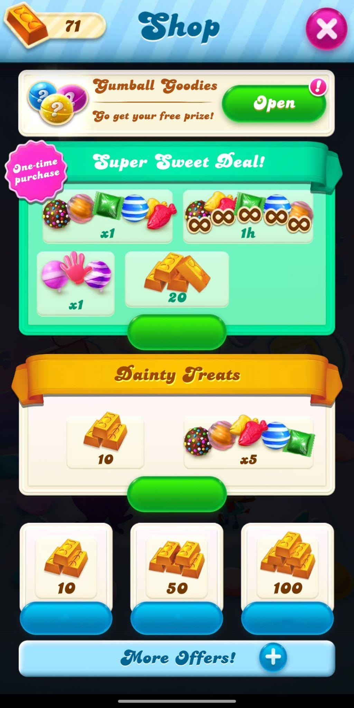
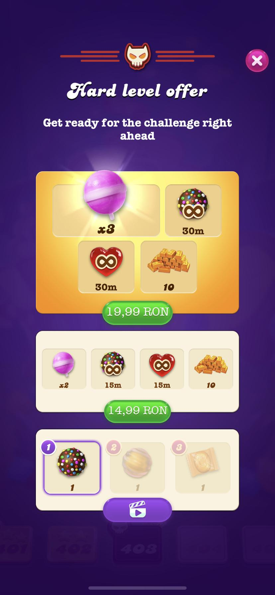

Case Study 02 · Evaluative Research · King / Candy Crush Soda, 2023–2024
A qualitative study with 11 high and medium spenders, exploring the emotional, strategic, and contextual drivers of in-game purchases. Loss aversion, guilt, and what the game industry gets right about financial decisions under pressure.
Why this connects to Wise
The same mechanisms that drive in-game spending decisions — emotion, loss aversion, framing effects, and post-decision guilt — are active across many high-stakes financial decisions. This study gave me deep fluency in that space.
Every player made an End-of-Game Purchase (EGP) when frustrated after failing a level — an impulse spend triggered by negative emotion, not rational evaluation.
5/11 players mentioned spending guilt unprompted. That guilt emerged when spending felt reactive, not strategic. In a mitigation context, guilt often indicates a user sensed something was wrong.
4 players with disabilities reported spending under different psychological conditions — anxiety about time limits, limited agency. A reminder that "standard user" assumptions break down at the margins.
The Problem
Candy Crush Soda had rich transactional data — which offers converted, at what price points, after how many attempts. But the motivational and emotional logic behind those decisions was unknown.
Specifically: why did players who said they had spending limits consistently exceed them? Why did the same offer trigger guilt in one player and satisfaction in another? Why did a feeling of achievement from the Season Pass outperform a higher-value shop purchase?
Methodology
This study was the qualitative leg of a larger mixed-methods programme. I designed it to capture decision process and emotional texture, not just stated preferences.
Why interviews, not surveys
Players consistently under-report spending in surveys — or deny it entirely. Shame and social desirability bias make self-reported spend data unreliable. In-depth interviews, with time to build trust and probe beneath the surface, were the only method that could surface how people actually feel about what they spend, not what they're comfortable admitting.
Moderated 1:1 remote interviews, 60–75 minutes. UK-based players recruited via Player Initiatives, screened on spending history (last 4 weeks and overall lifetime spend).
Active players at levels 2500–7500. Segmented into High Spenders (frequent, high-value), Medium Spenders (selective), and Low Spenders (rare, value-driven).
Players were shown shop screenshots without prices and asked to estimate them — a protocol adapted from behavioural economics price perception research.
Thematic analysis with two researchers. Coded for: motivation type, emotional valence, decision trigger, accessibility impact, and strategy vs. impulse.
Frequent buyers, Gold Bar-focused, strategy-oriented, price-sensitive, often have disabilities
Selective, value-driven, prefer combination offers, influenced by guilt and limits
Rare purchasers, intrinsic motivation (earning vs. buying), skilful resource conservation
Key Findings
100% of participants made End-of-Game Purchases (EGP) when they ran out of moves and felt stuck. The spending trigger was not desire — it was negative emotion. Rage-buy, not want-buy.
5/11 players mentioned guilt unprompted. The dominant coping mechanism: "I'm addicted to the game" — a label that transferred responsibility from choice to dependency, allowing spending to continue.
7/11 players preferred the Season Pass over higher-value shop bundles. Why? It gave them a sense of ownership, strategy, and agency — an inventory they could plan around. Earning felt better than buying.
7/11 players estimated prices as lower than actual. When shown real prices, reactions split: High Spenders anchored on value, Medium/Low Spenders on cost. The same offer landed completely differently.
4/11 high and medium spenders had disabilities — and spent under qualitatively different psychological conditions. Time-limited offers triggered anxiety rather than urgency. This was entirely absent from existing research.
Players who spent after completing a difficult level or unlocking a milestone reported no guilt — they framed it as earned, not impulse. Shame was absent when spending felt like self-reward. The same amount of money, in a different emotional context, produced a completely different response.
In their words
"I try to have spending limits, because I know I am addicted to the game. So I will not spend more than [limit]. But sometimes I don't stick to it."Medium Spender · Female
"Yeah, so the Deluxe pass — I've had that for over a year now. I like that you can plan around it. It's not just paying for something, it's building something."High Spender · Female
"I have chronic fatigue syndrome and there are days when I just can't play. And that's quite frustrating — you can't put it on hold."High Spender · Louisa, chronic illness
"I'd rather earn than buy. Getting a booster through skill feels completely different to buying one."Low Spender · Female
The shop under study
A key protocol: participants were shown shop screenshots without prices and asked to estimate them. The gap between perceived and actual price was one of the study's richest data points.

The Shop screen. 7/11 participants estimated prices significantly lower than actual — a systematic miscalibration, not random guessing.

"Hard level offer" — shown at the worst possible moment. Loss aversion + time pressure = the emotional conditions driving impulse spend.
Behavioural Science Framework
Each finding was interpreted through established theoretical frameworks — not just surfaced as a theme. That translation from observation to mechanism is what made the findings actionable for product and monetisation teams.
Kahneman and Tversky: losses feel roughly twice as painful as equivalent gains feel good. Running out of moves while close to completing a level is experienced as loss — spending to recover is psychologically mandatory for high-invested players.
Labelling oneself as addicted is a well-documented self-control bypass. It externalises agency and removes the cognitive dissonance between stated limits and actual behaviour — observed in 5 of 11 players.
Once players own boosters or gold bars, they assign them higher value than the equivalent cash. The Season Pass creates an owned inventory, triggering the endowment effect and driving sustained engagement.
Decisions made under negative affect (frustration) are less price-sensitive and less rational. The same player who carefully managed their spending limits during positive gameplay abandoned them entirely when frustrated.
Impact · Nikki Anderson Framework
What did this study change? Across product, strategy, and operations — here's the evidence.
1 · Direct Product Impact
2 · Strategic Influence
3 · Operational / ResOps Impact
The price estimation task — asking participants to estimate shop prices before seeing actuals — was adapted from behavioural economics and generated some of the study's richest data. It became a reusable stimulus methodology for future monetisation research across the team.
The dual-researcher coding model and the codebook built for this study were carried forward into subsequent King research projects.
Reflection
The most important decision I made was to expand the research question beyond "do players understand the shop?" to "why do they feel the way they do about spending?" That pivot happened in the first two interviews when guilt came up unprompted.
The price estimation task — asking participants to price the shop without seeing real prices — was directly adapted from behavioural economics methodology and generated some of the most actionable data in the study. It revealed not just what players thought prices were, but what they felt prices should be — which is the actual decision lever.
If I had run this as a usability study I would have missed the emotional and accessibility dimensions entirely. The frame matters as much as the method.